|
|
|
lornaland.co.uk Holidays Photo Gallery Lornaland Natter USA 2005 Journal Menu...24th - 25th February26th - 28th February Barcelona Pictures |
Barcelona26th February - 28th February 2004Thursday 26th February 2004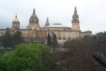 We wake up to rain and a horrible red itchy rash! It's all over my arms, stomach and back of my hands! :o(
We head up the hill to Poble Espanyol, an artificial Spanish village which should actually be called "Trap Touristique". Poble Espanyol is full of little shops and restaurants selling overpriced goods and food to tourists who have already paid 7 Euros to get in. 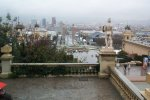 After our overpriced lunch of french bread pizzas, beer, wine, coffee and a "gofre" (waffle with chocolate and cream on - YUM!) we wandered back up the hill to Estadi Olympic (The Olympic stadium) It's much smaller than I expected for a 65,000 seater stadium. 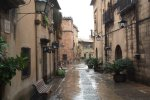 By this time we've walked miles and are very wet so we decide to head back to the hotel. After our success with the guide books recommendation for dinner last night, we decide to put our faith in it again and look for a nice tapas bar to try. 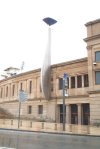 We choose a couple of tapas bars to check out in the Barri Gotic which were very near to each other. It was raining heavier now and by the time we got to the right street we were soaking wet! 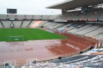 More bad news to come when we realised one of the bars was shut and we couldn't find the other one. We set off in search of somewhere selling food but without much success. We stumbled across what seemed to be some kind of protest in one of the squares. Loads of people had gathered and there was much shouting and singing and even some TV cameras but everything was happening in Spanish so we couldn't understand and all the brolly's were obstructing our view.
Having walked a bit further on, and now very very wet, we found a nice looking restaurant called "El Gran Cafe". It turned out to be a very nice meal in the end, once we got out of our moods! Nice wine, nice food and a man playing the piano (and 2 Essex wannabes drinking half bottles of champagne sitting next to us!)
Friday 27th February 2004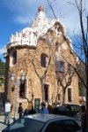 Woke this morning still with an itchy rash, and Dan a little bit hungover! 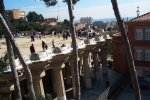 It's our last full day in Barcelona and it's finally stopped raining. There's a bright blue sky outside. Hurrah! First stop this morning was Guadi's "Park Guell". It was a lovely little park with cute gingerbread style houses. The views of Barcelona were fantastic too. 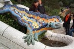 Next stop was "Camp Nou" home of FC Barcelona. 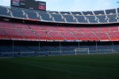 We decided to go on the guided tour as they take you into the changing rooms, press rooms, onto the pitch, into the players bar and into the director's box. The stadium is massive and seats 100,000 people. They have a strange way of keeping the birds off the pitch though. They do it by firing a cannon sound 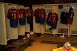 every few minutes which scares the birds away and also scares the tourists! It was very interesting and I was lucky enough to 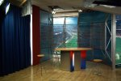 see on of the players (or so the guide told me but I didn't have my glasses on so couldn't quite see him properly) He did tell me his name but I forgot that too! After a bite to eat at Pan's & Co (a catalunya style fast food joint, bit of a cross between Subway and Burger King) we headed off to see some more of Guadi's houses. We didn't actually go in any of them due to the extortionist price they charged you. 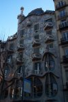In the evening we head off in search of "Toscano Antico" bar which is owned by a friend's niece. We had a taste of the yummy cocktails (in particular the Moulin Rouge which was very nice indeed) 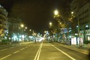 before we went to dinner. We decided tonight to try "L'Hostal De Rita" which is a sister restaurant to "La Fonda" which we tried on Wednesday night but like the other restaurant, it was very busy and had a long waiting line. We headed back to the Barri Gotic and Saturday 28th February 2004
We decide that we really should try some tapas in Spain so we start the search for somewhere to eat. We find a not-so-scary looking place towards the top of the Ramblas and with a little help from the phrases in the guide book we're just about managing to work out the menu when the waiter comes along and offers to help. He kindly asks if we like meat or seafood and says 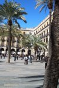 he will bring a selection for us to try (Dan gets octopus, prawns and crab and I get meatballs, ham and potatoes) It's quite nice (except for the prawns) but not so nice when we get the bill! The nice friendly waiter has charged us 53 Euros for it! (That's about £40 in old money) and that's for a "light lunch!" 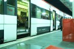2 hours and 20 minutes to take off and we're sitting on the train to the airport. 5.05pm - Departure time and we're still in the airport with no plane. It would seem that bad weather in Newcastle has caused the plane to be delayed. With not much news on the screens we take up a seat in the bar and wait (I do happen to bump into 2 old school teachers, Mrs Dunn and Mrs Scullion in the toilets though!!) A phone message from mother keeps us in the picture, heavy snow in Newcastle has caused the plane to Barcelona to be delayed. 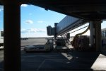7.45pm - We finally depart Barcelona 9.30pm - We're about 150 miles from Newcastle and just starting our decent. Should be back in Newcastle at 9.00pm (that's 9.00pm English time) |
 We set of to Montjuic, home of the Barcelona Olympics & decide to take the cable car up. We get half way to the cable car
station when we realise it's not open due to the pouring rain. Half an hour after leaving the hotel and Dan's feet
are soaking!
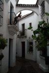
We arrive at Montjuic and it's got the coolist thing ever, outdoor escalator's which a start button!
We set of to Montjuic, home of the Barcelona Olympics & decide to take the cable car up. We get half way to the cable car
station when we realise it's not open due to the pouring rain. Half an hour after leaving the hotel and Dan's feet
are soaking!
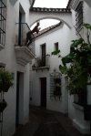
We arrive at Montjuic and it's got the coolist thing ever, outdoor escalator's which a start button!
 We left the restaurant in search of a bar to have a little nightcap before bed, something there doesn't seem to
be many of in Barcelona, well, not many other than Irish bars or ones that just look *really* scary! After a very
nice jug of sangria, it was time to go home to bed.
We left the restaurant in search of a bar to have a little nightcap before bed, something there doesn't seem to
be many of in Barcelona, well, not many other than Irish bars or ones that just look *really* scary! After a very
nice jug of sangria, it was time to go home to bed.
 It's our last day in Barcelona. We skip breakfast in favour of a lie in. Still got my rash! After
we've packed we head off for our last stroll around Barcelona. It's blue skies and no rain so we
walk along the harbour to the beach. It's a bit too cold for a swim so we stand on the sand and
take pictures instead. We then head off for a final stroll down the Ramblas.
It's our last day in Barcelona. We skip breakfast in favour of a lie in. Still got my rash! After
we've packed we head off for our last stroll around Barcelona. It's blue skies and no rain so we
walk along the harbour to the beach. It's a bit too cold for a swim so we stand on the sand and
take pictures instead. We then head off for a final stroll down the Ramblas.